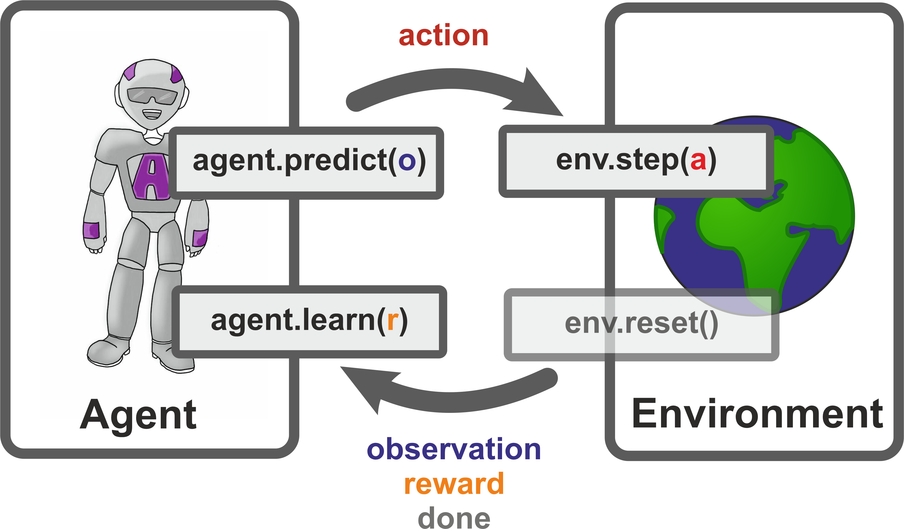

from ion_trap import IonTrapEnv
from tqdm.notebook import tqdmReinforcement Learning for Ion Trap Quantum Computers
This exercise is a short extension of the Ion Trap Reinforcement Learning Environment where we are going to employ a Projective Simulation (PS) agent to use short laser pulse sequences mapping an initially unentangled state \(|000\rangle\) onto a GHZ-like state:
\[\begin{align} |\mathrm{GHZ}\rangle = \frac{1}{\sqrt{d}}\sum_{i=0}^{d-1}|iii\rangle.\nonumber \end{align}\]
We will consider three qutrits, i.e., \(d=3\) for simplicity but you may choose to extend this at your own leisure.
More formally, we do not want to find GHZ states exactly but those states which are maximally entangled. We consider \(n\) \(d\)-level states to be maximally entangled if they have a Schmidt rank vector (SRV) of \((d,...,d)\) where the \(i\)th entry is the rank of the reduced density matrix \(\rho_i=\mathrm{tr}_{\bar{i}}(\rho)\) where \(\bar{i}\) is the complement of \(\{i\}\) in \(\{1,...,n\}\).
Luckily, you don’t really have to take care of this since this is already the default settings of the environment which we are going to load now:
That was easy. According to the docs in the init method, the class allows the following kwargs:
num_ions(int): The number of ions. Defaults to 3.dim(int): The local (odd) dimension of an ion. Defaults to 3.goal(list): List of SRVs that are rewarded. Defaults to[[3,3,3]].phases(dict): The phases defining the laser gate set. Defaults to{'pulse_angles': [np.pi/2], 'pulse_phases': [0, np.pi/2, np.pi/6], 'ms_phases': [-np.pi/2]}max_steps(int): The maximum number of allowed time steps. Defaults to 10.
If you want to change anything you need to provide kwargs in form of a dict with the desired arguments as follows IonTrapEnv(**{ 'max_steps': 20 }). Indeed, let us submit a small change. Since this is just supposed to be a small scale test, let us reduce the number of allowed phases and therefore, the number of possible actions.
import numpy as np
KWARGS = {'phases': {'pulse_angles': [np.pi/2], 'pulse_phases': [np.pi/2], 'ms_phases': [-np.pi/2]}}
env = IonTrapEnv(**KWARGS)\(G(j,k;\theta,\phi) = \exp(i\theta(e^{i\phi}|j\rangle\langle k| + e^{-i\phi}|k\rangle\langle j|))\)
Next, we need to get the reinforcement learning agent that is to learn some pulse sequences. We have a simple PS agent for you in store:
from ps import PSAgentFor the args of this class the docs say the following:
num_actions(int): The number of available actions.glow(float, optional): The glow (or eta) parameter. Defaults to 0.1damp(float, optional): The damping (or gamma) parameter. Defaults to 0.softmax(float, optional): The softmax (or beta) parameter. Defaults to 0.1.
We don’t know the number of actions at this point, but possibly want to keep all the other default parameters. Let’s ask the environment how many actions there are and initialize the agent accordingly.
num_actions = env.num_actions
agent = PSAgent(num_actions)Fantastic, we have everything ready for a first run. Let’s do that. The interaction between an environment and an agent is standardized through the openAI gym environments. In terms of code, we can imagine the interaction to go as follows,

Indeed, every reinforcement learning environment should provide at least two methods:
reset(): Resets the environment to its initial state. Returns the initial observation.step(action): Performs an action (given by an action index) on the environment. Returns the new observation, an associated reward and a bool valuedonewhich indicates whether a terminal state has been reached.
The agent on the other hand, supports the following two main methods:
predict(observation): Given an observation, the agent predicts an action. Returns an action index.learn(reward): Uses the current reward to update internal network.
Knowing that the IonTrapEnv has been built according to this standard and the agent features the two methods above, we can start coding the interaction between agent and environment:
observationarray([[ 2.44704731e-32+2.86917982e-32j],
[ 6.99131633e-17-5.00000000e-01j],
[ 2.20882461e-32-1.50389345e-32j],
[-3.61851957e-16-3.10202892e-16j],
[ 5.67515482e-17+4.75107715e-17j],
[-3.46599182e-16-1.89838693e-16j],
[-1.58723491e-16-4.23535752e-17j],
[ 2.23322076e-16-9.94215245e-17j],
[-2.37016824e-16+6.55798633e-18j],
[-4.30218688e-16-8.03880345e-17j],
[ 1.66880381e-17-7.96630463e-17j],
[-5.10861142e-16+3.37744235e-17j],
[-8.83981596e-34+1.23851892e-31j],
[ 5.00000000e-01+5.00000000e-01j],
[-5.96536889e-32+1.39175051e-31j],
[ 1.65213286e-16+1.13854581e-16j],
[ 7.96630463e-17+1.66880381e-17j],
[ 9.29973262e-17-2.54365245e-17j],
[-2.14724803e-16+1.09735681e-16j],
[ 7.70368470e-17-2.29438419e-16j],
[-1.24179879e-16-1.60465629e-16j],
[ 3.93788783e-17+4.79840700e-17j],
[-4.75107715e-17+5.67515482e-17j],
[ 2.24458322e-16-3.49879134e-17j],
[ 8.78398142e-33+1.18727865e-31j],
[ 5.00000000e-01-7.75982794e-16j],
[-3.94093646e-32+4.92214565e-32j]])observation.shape(27, 1)KWARGS = {'phases': {'pulse_angles': [np.pi/2], 'pulse_phases': [np.pi/2], 'ms_phases': [-np.pi/2]}, 'num_ions': 3, 'goal': [[3,3,1]], 'max_steps': 20}
env = IonTrapEnv(**KWARGS)
agent = PSAgent(num_actions)
# data set for performance evaluation
DATA_STEPS = []
# maximum number of episodes
NUM_EPISODES = 5000
for i in tqdm(range(NUM_EPISODES)):
# initial observation from environment
observation = env.reset()
#bool: whether or not the environment has finished the episode
done = False
#int: the current time step in this episode
num_steps = 0
action_seq = []
while not done:
# increment counter
num_steps += 1
# predict action
action = agent.predict(observation)
action_seq.append(action)
# perform action on environment and receive observation and reward
observation, reward, done = env.step(action)
# learn from reward
agent.train(reward)
# gather statistics
if done:
DATA_STEPS.append(num_steps)
print(action_seq)[np.int64(5), np.int64(0), np.int64(2), np.int64(4), np.int64(0)]And this is all the code that is needed to have an agent interact with our environment! In DATA_STEPS we have gathered the data that keeps track of the length of pulse sequences that generate GHZ-like states. We can use matplotlib to visualize the performance of the agent over time:
import matplotlib.pyplot as plt
import numpy as np
n = 20 # window size for moving average
moving_avg = np.convolve(DATA_STEPS, np.ones(n)/n, mode='valid')
plt.plot(np.arange(len(moving_avg)), moving_avg, label=f'{n}-step moving avg')
plt.legend()
# x_axis = np.arange(len(DATA_STEPS))
# plt.plot(x_axis, DATA_STEPS)
plt.ylabel('Length of pulse sequence')
plt.xlabel('Episode')Text(0.5, 0, 'Episode')
We have witnessed an agent learning! The agent was able to push the gate sequences down to 5 laser pulses consisting of two Molmer-Sorensen gates and three single-ion laser pules. Note that this is of course not conclusive because it is a single agent. Nevertheless, it has obviously learned and we can expect future agents to fare similarly. Good work!
Multi SRV training
KWARGS = {'phases': {'pulse_angles': [np.pi/2], 'pulse_phases': [np.pi/2], 'ms_phases': [-np.pi/2]}, 'num_ions': 3, 'goal': [[3,2,3]]}
env = IonTrapEnv(**KWARGS)def training_rl(goal, num_episodes):
KWARGS = {'phases': {'pulse_angles': [np.pi/2], 'pulse_phases': [np.pi/2], 'ms_phases': [-np.pi/2]}, 'num_ions': 3, 'goal': [goal]}
env = IonTrapEnv(**KWARGS)
num_actions = env.num_actions
agent = PSAgent(num_actions)
# data set for performance evaluation
DATA_STEPS = []
for i in tqdm(range(num_episodes)):
# initial observation from environment
observation = env.reset()
#bool: whether or not the environment has finished the episode
done = False
#int: the current time step in this episode
num_steps = 0
action_seq = []
while not done:
# increment counter
num_steps += 1
# predict action
action = agent.predict(observation)
action_seq.append(action)
# perform action on environment and receive observation and reward
observation, reward, done = env.step(action)
# learn from reward
agent.train(reward)
# gather statistics
if done:
DATA_STEPS.append(num_steps)
return DATA_STEPS# create all possible combinations of SRV (i.e. values from 1 to 3 for each ion in num_ions
num_ions = 3
from itertools import product
all_srv = list(product([1,2,3], repeat=num_ions))
# allow all ones, but otherwise require at least two 2s or 3s
all_srv = [srv for srv in all_srv if srv == (1, 1, 1) or is_valid_srv(srv)[0]]
# add constrained that there cannot be a single 2 or 3 in the srv, two at minimumall_srv[(1, 1, 1),
(1, 2, 2),
(1, 3, 3),
(2, 1, 2),
(2, 2, 1),
(2, 2, 2),
(2, 2, 3),
(2, 3, 2),
(2, 3, 3),
(3, 1, 3),
(3, 2, 2),
(3, 2, 3),
(3, 3, 1),
(3, 3, 2),
(3, 3, 3)]rew133 = training_rl(goal = [1,3,3], num_episodes = num_episodes)moving_avg = np.convolve(rew133, np.ones(n)/n, mode='valid')
plt.plot(np.arange(len(moving_avg)), moving_avg, label=label, color=color)
# x_axis = np.arange(len(DATA_STEPS))
# plt.plot(x_axis, DATA_STEPS)
plt.ylabel('Length of pulse sequence')
plt.xlabel('Episode')Text(0.5, 0, 'Episode')
num_episodes = 5000
rewards = np.zeros((len(all_srv), num_episodes))
for idx, srv in enumerate(all_srv):
rewards[idx] = training_rl(goal = list(srv), num_episodes = num_episodes)import matplotlib.pyplot as pltplt.plot(rewards[:,-10:].mean(1))array([ 1., 2., 10., 2., 2., 1., 5., 5., 4., 5., 5., 4., 10.,
4., 5.])plt.figure(figsize=(10, 6))
colors = plt.cm.coolwarm(np.linspace(0, 1, len(all_srv)))
for srv, rew, color in zip(all_srv, rewards, colors):
n = 20 # window size for moving average
label = f"SRV={srv}"
moving_avg = np.convolve(rew, np.ones(n)/n, mode='valid')
plt.plot(np.arange(len(moving_avg)), moving_avg, label=label, color=color)
# plt.legend()
plt.xlabel('Episode')
plt.ylabel('Length of pulse sequence')
plt.title('Moving Average of Pulse Sequence Lengths for Different SRVs')
# for rew in rewards:
# n = 20 # window size for moving average
# # create labels for each line based on srv
# moving_avg = np.convolve(rew, np.ones(n)/n, mode='valid')
# plt.plot(np.arange(len(moving_avg)), moving_avg)Text(0.5, 1.0, 'Moving Average of Pulse Sequence Lengths for Different SRVs')
# Define a threshold for convergence, e.g., if the moving average of the last 100 episodes is above a certain value
convergence_threshold = 9 # You can adjust this threshold based on your definition of convergence
window = 100
not_converged_srvs = []
for idx, srv in enumerate(all_srv):
moving_avg = np.convolve(rewards[idx], np.ones(window)/window, mode='valid')
if np.mean(moving_avg[-window:]) > convergence_threshold:
not_converged_srvs.append(srv)
print("SRVs for which RL training has not converged:", not_converged_srvs)SRVs for which RL training has not converged: [(1, 3, 3), (3, 3, 1)]for srv in all_srv:
print(f"SRV: {srv}, Validity: {is_valid_srv(srv)}")NameError: name 'all_srv' is not defineddef is_valid_srv(srv, d=None):
"""
Check necessary (and for n=3, essentially sufficient) conditions for a Schmidt Rank Vector (SRV)
of an n-qudit pure state.
Args:
srv (Iterable[int]): local ranks (r1, r2, ..., rn), each >= 1
d (int | Iterable[int] | None): local dimensions. If int, all subsystems have dim d.
If iterable, must have same length as srv. If None, skip dim checks.
Returns:
(ok: bool, reason: str)
"""
from math import prod
# Basic form checks
try:
r = [int(x) for x in srv]
except Exception:
return False, "SRV must be an iterable of integers."
if any(x < 1 for x in r):
return False, "All ranks must be positive integers."
n = len(r)
if n < 2:
return False, "SRV must have length >= 2."
# Local dimension checks (if provided)
if d is not None:
if isinstance(d, int):
dims = [d] * n
else:
dims = list(d)
if len(dims) != n:
return False, "Local-dimension list must match SRV length."
if any(di < 1 for di in dims):
return False, "All local dimensions must be >= 1."
for i, (ri, di) in enumerate(zip(r, dims)):
if ri > di:
return False, f"Rank r[{i}]={ri} exceeds local dimension d[{i}]={di}."
# Submultiplicativity constraints: r_i <= Π_{j≠i} r_j
for i in range(n):
rhs = prod(r[j] for j in range(n) if j != i)
if r[i] > rhs:
return False, f"Violates submultiplicativity at index {i}: r[{i}]={r[i]} > product of others {rhs}."
# Extra necessary constraint for exactly three parties:
# if one party is pure (rank 1), the other two form a bipartite pure state ⇒ their single-party ranks are equal.
if n == 3:
for i in range(3):
if r[i] == 1:
j, k = (i + 1) % 3, (i + 2) % 3
if r[j] != r[k]:
return False, (
f"For 3 parties with r[{i}]=1, the other two ranks must be equal "
f"(found r[{j}]={r[j]} and r[{k}]={r[k]})."
)
# Note: For n > 3 these are necessary but not sufficient conditions.
return True, "SRV passes all general necessary checks."